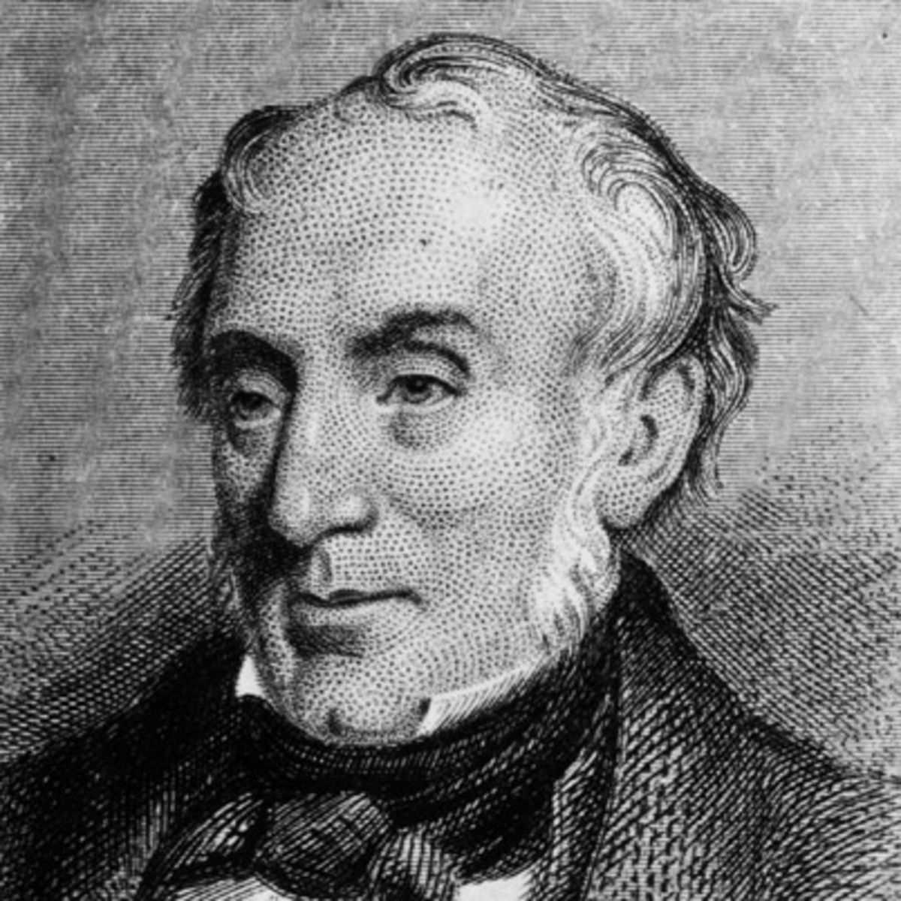
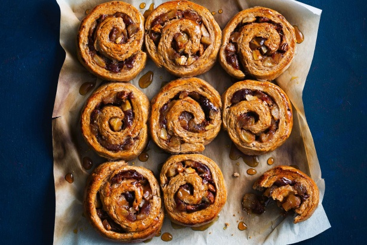

The Magical Bakery was founded in the year 1650 by Jonah McDonald in Shropshire, England. The following two decades saw the bakery rise to fame across the land, with King James II personally requesting that Jonah bring his delicious baked goods to the royal court. It was here, admidst the Glorious Revolution of 1688, that newly crowned William III of Orange, royally decreed that Jonah must immediately take the fares of his magical bakery back to the stadtholder's native Netherlands. The next 300 years saw an unprecedented expansion of the Magical Bakery, with stores opening up all across the Benelux and the rest of continental Europe. The first US Magical Bakery opened in 1978 in New York City.
The Magical Bakery is now one of the leading bakery franchises in the world, employing over 12,000 people across 6 continents, who all share the magical values we bake into our goods. In 2015 the Magical Bakery became the first institution to succesfully create a bagel containing over 85 different flavours, a world first. The Magical Bakery is also a leading member of the "Bake it good, Bake it right" foundation - a group of conglomerates dedicated to ensuring that all ingredients are ethicially sourced from fair-trade, and unexploitative working conditions.
